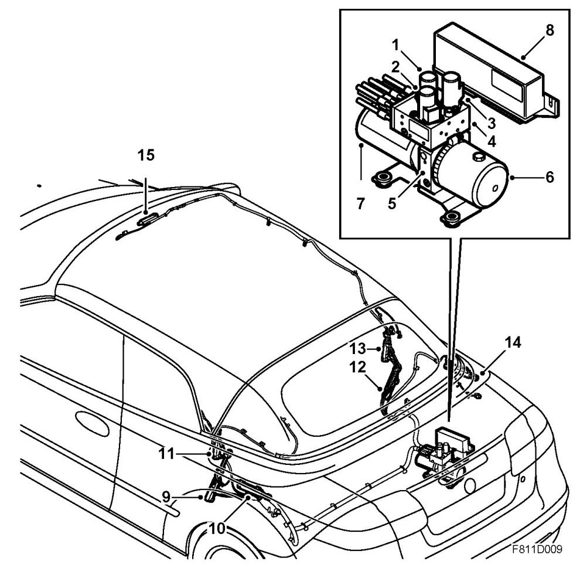
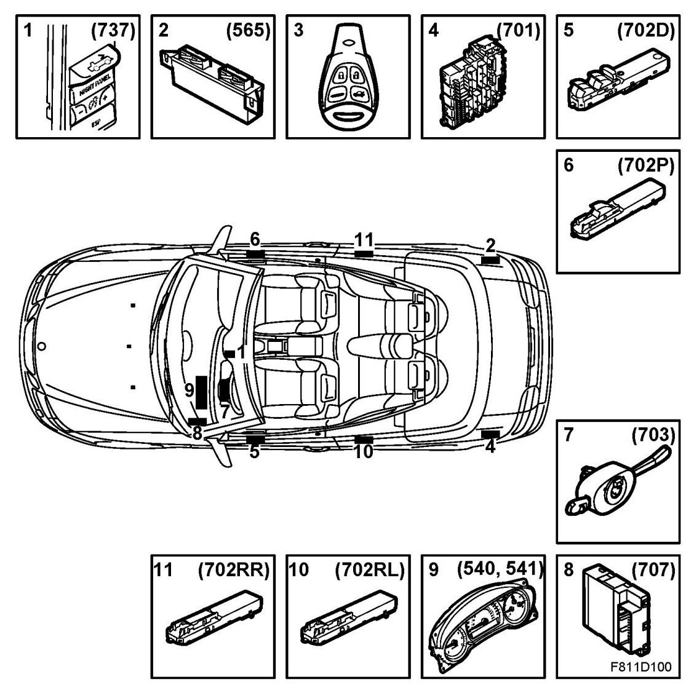
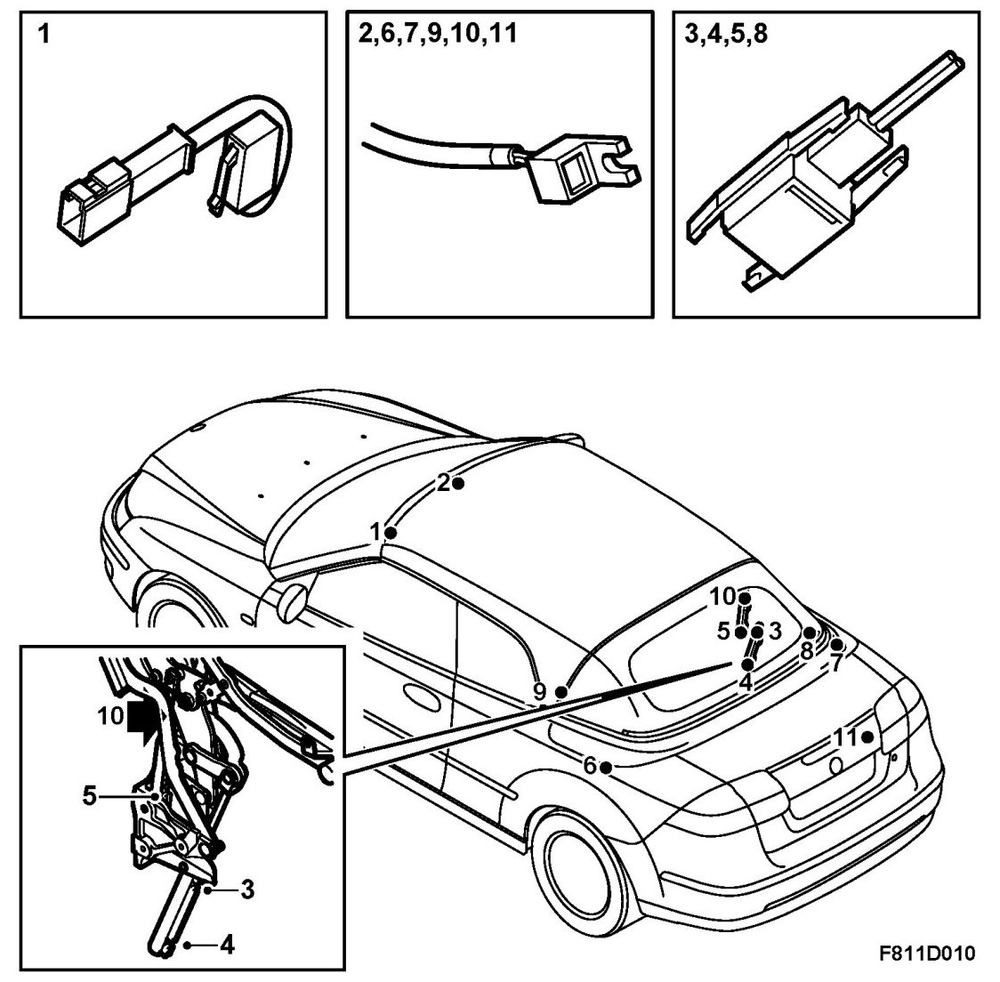

Soft Top Operation, Main Components
Soft Top Operation, Main Components
Hydraulic system

1. Hydraulic valve 1 (green)
2. Hydraulic valve 2 (blue)
3. Hydraulic valve 3 (orange)
4. Valve block with shuttle valves
5. Hydraulic pump with relief valve and shuttle valves
6. Oil reservoir
7. Electric motor
8. Control module
9. Main hydraulic cylinder, LH
10. Soft top cover hydraulic cylinder, left
11. Sixth bow hydraulic cylinder, left
12. Main hydraulic cylinder, RH
13. Sixth bow hydraulic cylinder, right
14. Soft top cover hydraulic cylinder, right
15. First bow hydraulic cylinder
Electrical components

1. Soft top switch
2. Control module STC
3. Remote control
4. Rear Electric Centre (REC)
5. Driver door module (DDM)
6. Passenger door module (PDM)
7. Column integration module (CIM)
8. Body control module (BCM)
9. MIU/SID (Saab Information Display)
10. Rear left door module (RLDM)
11. Rear right door module (RRDM)
Sensors

1. Windscreen frame, first bow locked left
2. First bow, first bow secured
3. Main cylinder, raised soft top
4. Main cylinder, lowered soft top
5. Hydraulic cylinder, sixth bow open
6. Soft top cover hinge, soft top cover closed left
7. Soft top cover hinge, soft top cover closed right
8. Hydraulic cylinder, open soft top cover
9. Soft top mechanism, sixth bow locked left
10. Soft top mechanism, sixth bow locked right
11. Soft top storage